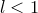

Time-series data often need special consideration when intervals of days or months are spanned. Given a series of times and calendar dates, it is not straightforward to calculate the elapsed times between the datapoints since the non-uniform lengths of the months must be accounted for, as well as the occurrence of leap years. Similarly, given datapoints spread over a period of days from some start point, it may be desirable to label a time axis with calendar dates. But working out what calendar date comes  days after some start point requires considerable effort.
days after some start point requires considerable effort.
Astronomers usually get around such issues by expressing dates and times as Julian Day (JD) numbers, which count the number of days elapsed since noon on 1st January 4713 BC in the Julian Calendar. The time of day is represented as the fractional part of the Julian Day number. For example, midnight on 1st January 2000 (Gregorian calendar) was JD , and noon on the same day was JD  .
.
Pyxplot provides a range of pre-defined functions, all prefixed time_ for converting between calendar dates and Julian Day numbers. The function time_julianday() is used to convert from a calendar date to a Julian Day number. It takes six inputs: the year, the month number (1–12), the day of the month (1–31), the hour of day (0–24), the number of minutes (0–59), and the number of seconds (0–59). To enter dates before AD 1, a year of  should be passed to indicate 1 BC,
should be passed to indicate 1 BC,  should be passed to indicate the year 2 BC, and so forth. The following example returns the Julian Day number at midnight on 1st January 2000:
should be passed to indicate the year 2 BC, and so forth. The following example returns the Julian Day number at midnight on 1st January 2000:
pyxplot> print time_julianday(2000,1,1,0,0,0.0)
2451544.5
By default, the time_julianday() function makes a transition from the Julian calendar to the Gregorian calendar at midnight on 14th September 1752 (Gregorian calendar), when Britain and the British Empire switched calendars. Thus, dates between 2nd September and 14th September 1752 are not valid input dates, since they days never occurred in the British calendar. This behaviour may be changed using the set calendar command, which offers a choice of nine different calendars listed in Table 4.2.
Calendar |
Description |
British |
Use the Gregorian calendar from 14th September 1752 (Gregorian), and the Julian calendar prior to 2nd September 1752 (Julian). |
French |
Use the Gregorian calendar from 20th December 1582 (Gregorian), and the Julian calendar prior to 9th December 1582 (Julian). |
Greek |
Use the Gregorian calendar from 1st March 1923 (Gregorian), and the Julian calendar prior to 15th February 1923 (Julian). |
Gregorian |
Use the Gregorian calendar for all dates. |
Hebrew |
Use the Hebrew (Jewish) calendar. |
Islamic |
Use the Islamic (Muslim) calendar. Note that the Islamic calendar is undefined prior to 1st Muharram AH 1, corresponding to 18th July AD 622. |
Julian |
Use the Julian calendar for all dates. |
Papal |
Use the Gregorian calendar from 15th October 1582 (Gregorian), and the Julian calendar prior to 4th October 1582 (Julian). |
Russian |
Use the Gregorian calendar from 14th February 1918 (Gregorian), and the Julian calendar prior to 31st January 1918 (Julian). |
Several functions are provided for converting dates back from Julian Day numbers to calendar dates. For producing string representations of calendar dates, the function time_string() should be used, which takes two inputs, the second of which is optional. The first is the Julian Day number to be converted, and the second is a string which controls the format of the output. If no format string is provided, then the format
"%a %Y %b %d %H:%M:%S"
is used. Table 4.3 lists the tokens which are substituted for various parts of the date. The following examples demonstrate the use of the time_string() function for three dates:
Token |
Substitution value |
%% |
A literal % sign. |
%a |
Three-letter abbreviated weekday name. |
%A |
Full weekday name. |
%b |
Three-letter abbreviated month name. |
%B |
Full month name. |
%C |
Century number, e.g. 21 for the years 2000-2100. |
%d |
Day of month. |
%H |
Hour of day, in range 00-23. |
%I |
Hour of day, in range 01-12. |
%k |
Hour of day, in range 0-23. |
%l |
Hour of day, in range 1-12. |
%m |
Month number, in range 01-12. |
%M |
Minute, in range 00-59. |
%p |
Either am or pm. |
%S |
Second, in range 00-59. |
%y |
Last two digits of year number. |
%Y |
Year number. |
pyxplot> print time_string(2451544.5)
Sat 2000 Jan 1 00:00:00
pyxplot> print time_string(2451544.5+50, "%d %B %Y")
20 February 2000
pyxplot> set calendar muslim
pyxplot> print time_string(2451544.5+50, "%d %B %Y")
15 Dhu l-Qa’da 1420
Several functions are provided for numerically returning the various parts of the calendar date associated with any given Julian Day number. All of these functions, with the exception of time_dayweekname() and time_monthname() take a single input, which should be a Julian Day number:
time_dayweekname() – takes two arguments, the first of which should be a Julian Day number, and the second of which should be a number indicating the number of characters to return. Returns the name, truncated to characters, of the day of the week. If , the full name is returned.
time_dayweeknum() – returns the number (1=Monday–7=Sunday) of the day of the week.
time_monthname() – takes two arguments, the first of which should be a Julian Day number, and the second of which should be a number indicating the number of characters to return. Returns the name, truncated to characters, of the calendar month. If , the full name is returned.
time_monthnum() – returns the number (1-12) of the calendar month.
Optionally, the set calendar command can be used to set different calendars to use when reading calendar dates in and converting them to Julian Day numbers, and when converting Julian Day numbers to calendar dates. This is useful when converting data from one calendar to another. The syntax used to do this is as follows:
set calendar in Julian # only applies to time_julianday() set calendar out Gregorian # does not apply to time_julianday() set calendar in Julian out Gregorian # change both show calendar # show calendars currently being used
Finally, the function time_now(), which takes no arguments, returns the Julian Day number corresponding to the current system clock time, as in the following example:
pyxplot> print time_string(time_now())
Wed 2010 Mar 3 17:04:07
Calculating the date of Leo Tolstoy’s birth.
The Russian novelist Leo Tolstoy was born on 28th August and died on 7th November in the Russian calendar. What dates do these correspond to in the Western calendar? |
pyxplot> set calendar in russian out british |